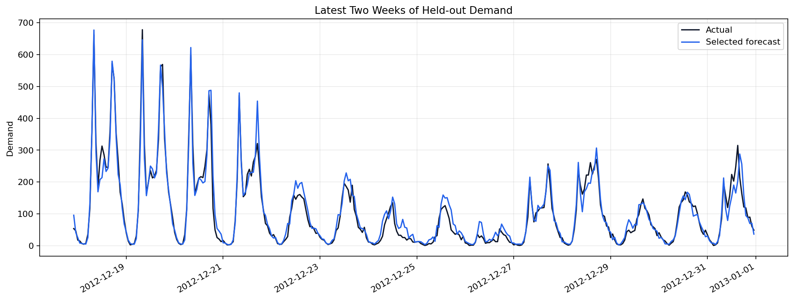
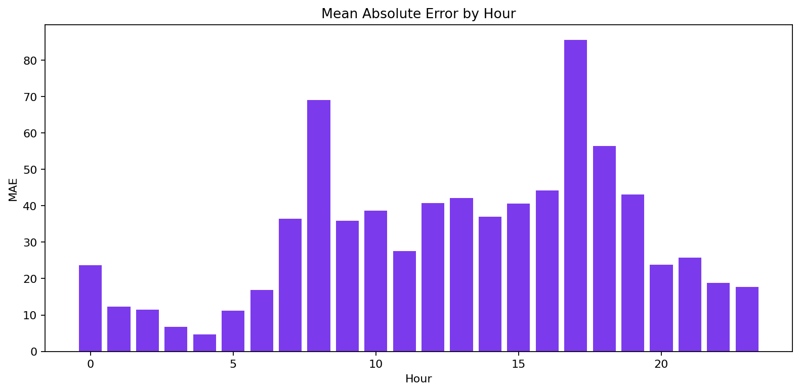
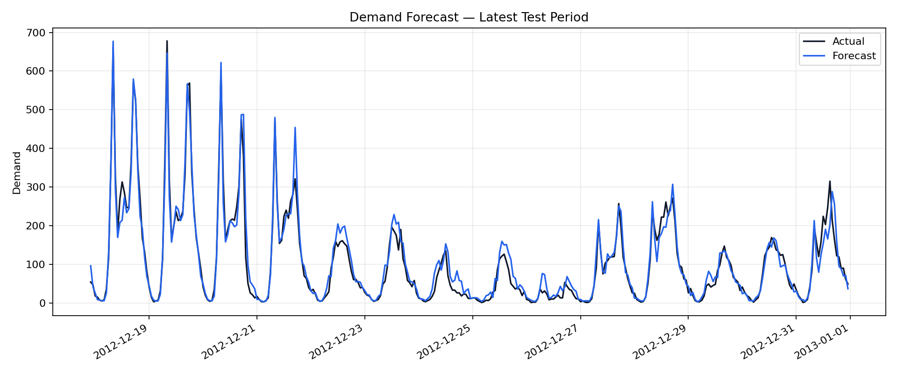

Demand Forecasting with Historical Features
Author: Mohammed Adeen Shaik
Review date: 11 October 2026
Research question
Does gradient boosting improve demand error over a seasonal baseline in chronological evaluation?
Data and provenance
UCI Bike Sharing data, used as a demand-planning teaching example.
Source materials are linked from the repository README. Input fingerprints are recorded in the evidence manifest so a reader can identify the exact committed artifacts used in this review.
Method and analytical rationale
Earlier periods train the model, the next period selects it and the last period measures error. Lag and rolling statistics use earlier observed targets.
Findings and interpretation
Fresh execution on 11 October 2026 using the committed pipeline and random seed 42. Validation selected gradient_boosting. On 2,582 later-period rows, selected-model MAE was 32.19 and seasonal-naive MAE was 85.74, a 62.5% reduction. This is rolling one-step evaluation using observed prior targets, not an advance multi-step forecast.
| Measure | Value |
|---|---|
| selected model | gradient_boosting |
| seasonal lag | 168 |
| train rows | 12047 |
| validation rows | 2582 |
| test rows | 2582 |
| random seed | 42 |
| Test model | MAE | RMSE | sMAPE |
|---|---|---|---|
| test_gradient_boosting | 32.19 | 51.45 | 0.221 |
| test_seasonal_naive | 85.74 | 149.41 | 0.456 |
| test_selected | 32.19 | 51.45 | 0.221 |
Limitations
This is rolling one-step evaluation with observed history, not a multi-step forecast from a single origin. Weather variables may be observed rather than known in advance. Row-based lags can differ from calendar-hour lags when timestamps are missing. Bike rentals are not actual retail SKU sales.
Reproduction
Use the setup commands and input contract in the repository README. Open the notebook catalogue for annotated code and saved outputs. Keep raw records and model binaries local; public reports contain aggregate results or source-embedded figures.
Final visual results

Figure from key_visuals.ipynb, original code cell 3.

Figure from key_visuals.ipynb, original code cell 4.

Held-out evaluation figure: forecast_vs_actual.png.